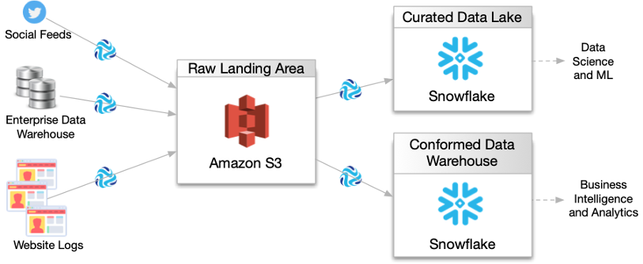
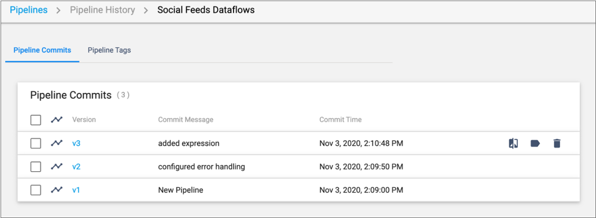
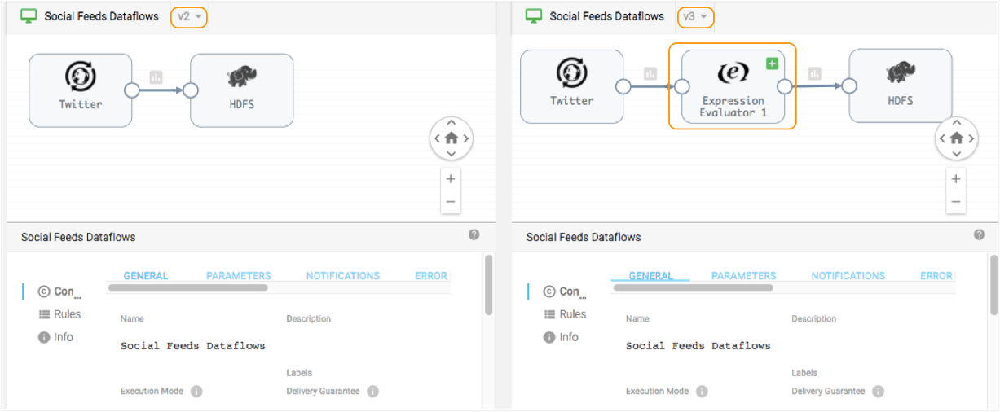
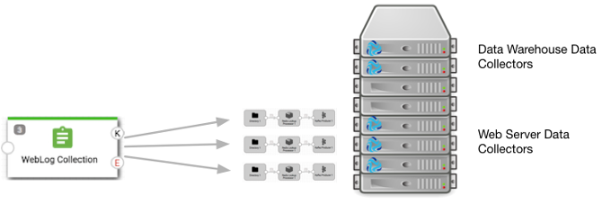
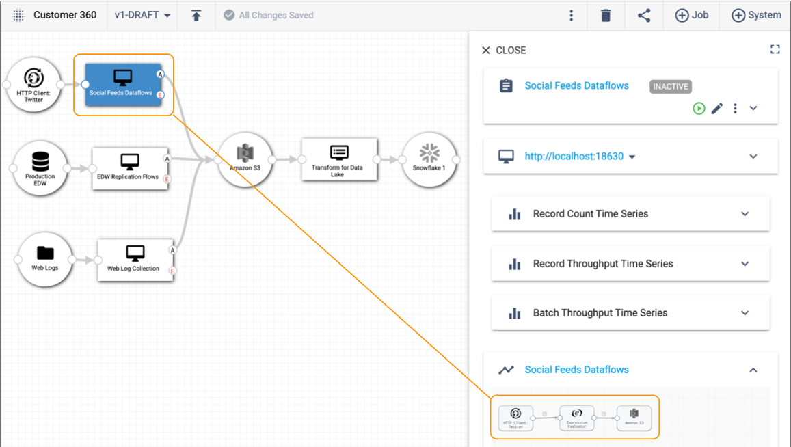
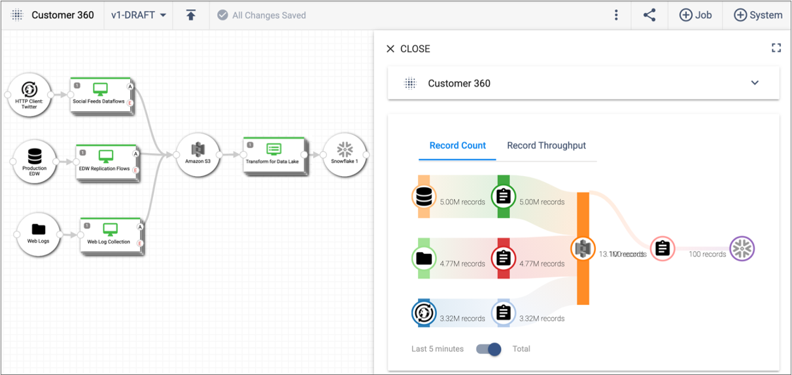
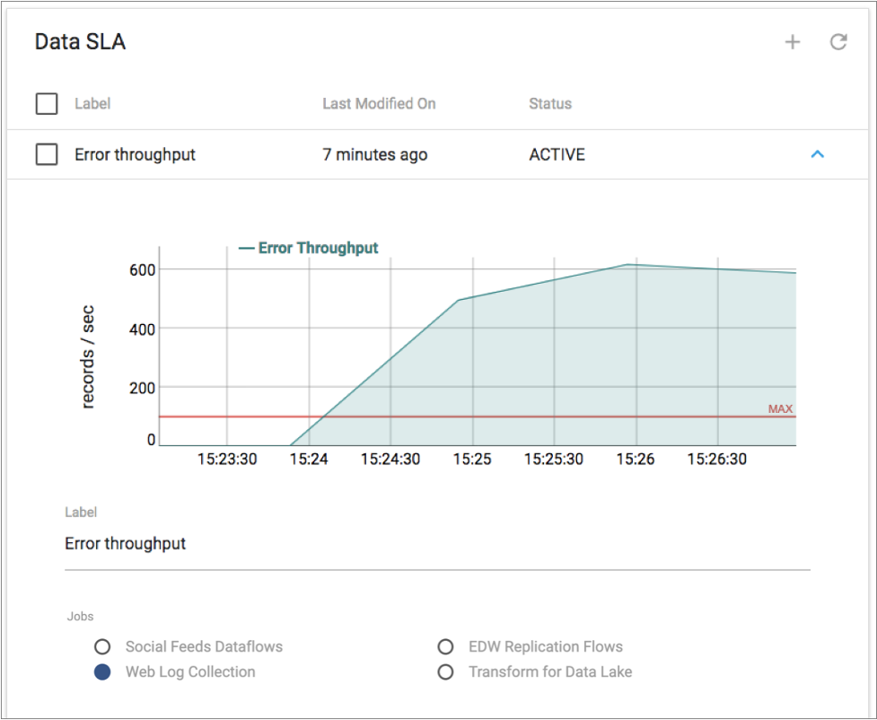

Meet StreamSets Control Hub
StreamSets Control HubTM is a central point of control for all of your dataflow pipelines. Control Hub allows teams to build and execute large numbers of complex dataflows at scale.
Teams of data engineers use the shared repository provided with Control Hub to collaboratively build pipelines. Control Hub provides full lifecycle management of the pipelines, allowing you to track the version history and giving you full control of the evolving development process. Control Hub lets you deploy and execute dataflows at scale on manually administered or automatically provisioned Data Collectors or on edge devices using Data Collector Edge. You can map multiple dataflows in a single visual topology and can view real-time statistics to measure dataflow performance across each topology, from end-to-end or point-to-point. You can also monitor alerts to ensure that incoming data meets business requirements for availability and accuracy.
Multiple types of users within your organization can perform different roles in Control Hub. For example, a data architect typically creates a high-level design of how data needs to flow through multiple systems. Teams of data engineers use this high-level design to build individual pipelines in Control Hub Pipeline Designer or a development Data Collector. The data engineers then publish the finished pipelines to Control Hub.
A DevOps or site reliability engineer adds published pipelines to jobs and then starts the jobs across multiple execution Data Collectors or Edge Data Collectors, running a remote pipeline instance on each execution component. Data architects map the related jobs into a single visual topology, and then use the topology to monitor and measure the complete dataflow. DevOps engineers create data SLAs (service level agreements) for topologies to define thresholds that the dataflows cannot exceed, ensuring that data is delivered in a timely manner.
Let’s take a closer look at what data architects, data engineers, and DevOps engineers can accomplish with Control Hub.
Design the Complete Data Architecture
As a data architect - the person responsible for defining how data is stored, consumed, and managed by different systems - you design the complete flow of data through multiple systems. You might architect the high-level design in a design document or diagram. Then, you work with your team to develop pipelines that meet those dataflow needs.
For example, you need to create a 360-degree view of your customers by collecting all customer data captured in your organization’s social feeds, enterprise data warehouse, and website logs. You need to ingest data from these source systems using streaming, batch, and change data capture mode into a raw landing area in Amazon S3. From there, you determine that the data must be transformed, filtered, and structured before writing it to a curated data lake in Snowflake and to a report-ready conformed data warehouse in Snowflake. From the curated data lake and conformed data warehouse, the data can be further analyzed using data science, machine learning, and business intelligence tools.
To address this need, you create the following high-level design of the complete data flow:

Then the rest of your team uses this high-level design to develop the necessary pipelines, jobs, and topologies within Data Collector and Control Hub.
Collaboratively Build Pipelines
As a data engineer - the person responsible for making sure that data flows smoothly between systems - you build the pipelines needed to implement the designed data architecture. You use Control Hub Pipeline Designer or a development Data Collector to build pipelines.
During the development process, you share your pipelines with other data engineers so that you can collaboratively build pipelines as a team using your organization's best practices. When the pipelines are complete, you publish the pipelines to the pipeline repository in Control Hub.
Control Hub provides release management of pipelines. A typical pipeline development cycle involves iterative changes to the pipeline. Control Hub maintains the version history of each published pipeline. For example, as you design the Social Feeds Dataflows pipeline, you test the pipeline and then make changes to it. As a result, you will likely publish the pipeline to the Control Hub pipeline repository multiple times, as displayed in the following image of the pipeline history:

When viewing the pipeline history in Control Hub,
you can view the configuration details for any pipeline version and can compare pipeline
versions side-by-side. For example, if you click the Compare with Previous
Version icon  for version 3 in the image above, Control Hub
displays version 2 and version 3 in the comparison window as follows:
for version 3 in the image above, Control Hub
displays version 2 and version 3 in the comparison window as follows:

You can see that version 3 of the pipeline added an Expression Evaluator processor. You can drill into the details of each pipeline stage, and compare the configuration of each stage between the versions.
You can add tags to pipeline versions to mark release points or to separate development and production environments. For example, when you finish developing the Social Feeds Dataflows pipeline, you add a Ready to Deploy tag to the latest version. That tag informs your DevOps engineer which pipeline version is ready to be added to a job and run.
Execute Jobs at Scale
Pipelines are the design of the dataflow. Jobs are the execution of the dataflow. Data engineers build pipelines with the Control Hub Pipeline Designer or a development Data Collector. DevOps or site reliability engineers run jobs on groups of execution Data Collectors or Edge Data Collectors.
As a DevOps or site reliability engineer - the person responsible for ensuring that all services and systems are scalable and reliable - you register both development and execution Data Collectors with Control Hub. You register Data Collectors by manually administering them or by automatically provisioning them on a container orchestration framework such as Kubernetes. All registered Data Collectors - either manually administered or automatically provisioned - function in the same way.
If your organization runs dataflows on edge devices, you also register and manually administer execution Edge Data Collectors with Control Hub.
You create Control Hub jobs to run pipelines on groups of execution Data Collectors or Edge Data Collectors. When you start a job on a group of Data Collectors or Edge Data Collectors, Control Hub remotely runs the pipeline on each execution component in the group. This enables you to manage and orchestrate large scale dataflows run across multiple Data Collectors or Edge Data Collectors.
You might organize jobs by project, geographic region, or department. For example, your data engineer has developed and published the WebLog Collection pipeline and the EDW Replication Flows pipeline. In your data center, you designate Data Collectors that run on several of the servers as the web server group. You designate another group of Data Collectors running on other servers as the data warehouse group. You then create a job to run the WebLog Collection pipeline on the group of web server Data Collectors.
The following image displays how the WebLog Collection job runs a remote pipeline instance on each Data Collector in the web server group. The job does not run pipelines on Data Collectors in the data warehouse group, which are Data Collectors that are reserved for pipelines that read from the enterprise data warehouse.

Map Jobs into a Topology
In Data Collector, you can monitor and view the details of a single pipeline. However, you typically run multiple intermediary pipelines, all of which work together to create a complete dataflow.
As a data architect, you create a topology in Control Hub to map multiple related jobs into a single view. A topology provides interactive end-to-end views of data as it traverses multiple pipelines. You can add any number of jobs to a topology.
To continue our Customer 360 example, the WebLog Collection pipeline reads web server log files and writes the data to a raw landing area in Amazon S3. Additional pipelines read from Twitter social feeds and from an enterprise data warehouse and also write the data to Amazon S3. Another pipeline consumes the Amazon S3 data, processes it, and writes the data to Snowflake. In Control Hub, you can create a topology that includes jobs for all the pipelines, as follows:

From the topology, you can select each job and then drill into the configuration details of each pipeline. For example, if we select the Social Feeds Dataflows job in the topology canvas above, we can the three stages included in the pipeline in the detail pane on the right.
Measure Dataflow Quality
As a data architect or as a DevOps or site reliability engineer, you can measure the health of the topology and the performance of all jobs and connecting systems included in the topology.
Control Hub monitoring provides real-time statistics and error information about the running pipelines.
For example, the detail pane of the Customer 360 topology provides a single view into the record count and throughput for all running pipelines in the topology:

You can select a job or a connecting system within the topology to discover more detailed monitoring about the job or system.
When you start a job on a group of Data Collectors, Control Hub provides a single view of the statistics for the complete job. From a job, you can view the statistics for a single pipeline or you can view the aggregated statistics across all remote pipeline instances that are run on a group of Data Collectors.
Monitor Dataflow Operations
As a DevOps or site reliability engineer, you can monitor your day-to-day operations by defining data SLAs (service level agreements) to ensure that incoming data meets business requirements for availability and accuracy.
In addition to measuring the health of a topology, you define data SLAs to define the expected thresholds of the data throughput rate or the error record rate. Data SLAs trigger an alert when the specified threshold is reached. Data SLA alerts provide immediate feedback on the data processing rates expected by your team. They enable you to monitor your dataflow operations and quickly investigate and resolve issues that arise.
For example, you have service level agreements with the operational analytics team to ensure that all of the data captured and processed in the Customer 360 topology is clean and available for immediate analysis. If any of the Customer 360 jobs encounter processing errors, you must immediately resolve those issues. You define and activate a data SLA that triggers an alert when a job in the topology encounters more than 100 error records per second.
If the alert triggers, Control Hub notifies you with a red Alerts icon in the top toolbar: . You drill into the details of the data SLA to discover which threshold was reached and to investigate the issues that need to be resolved. The triggered data SLA displays a graph of the error record rate. The red line in the graph represents the defined threshold, as follows:

We've seen how you can use Control Hub to turn a high-level architecture diagram of your dataflows into pipelines and jobs that you can then manage and measure from a single topology. Give it a try, and see for yourself how easily you can control all of your complex dataflow pipelines with Control Hub.